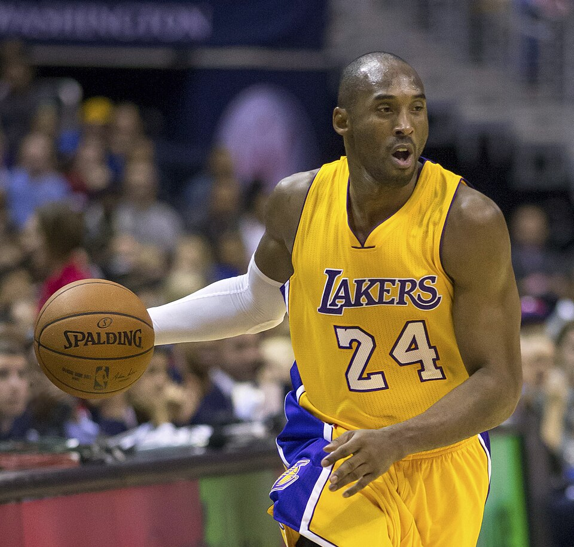

PRIMARY SOURCE ARCHIVE / V0.1
Hunt or be hunted
has always been my mentality.
Kobe Bryant · 8Teen · 2015 ↗

01 / 03
向下探索
THE COLLECTION
177核心来源 / 事件
25时间线节点
15经核对短引文
19记录间关系
And so I ran.
Kobe Bryant · Dear Basketball · 2015 ↗
01 / 早期
1996
从高中，走向 NBA
宣布参加选秀；由夏洛特选中，随后加盟洛杉矶湖人。
来源 NBA.com · T001 / T002 02 / 生涯 2000首座总冠军
湖人赢得科比时代的首个 NBA 总冠军，三连冠由此开始。
来源 NBA.com · T004 03 / 生涯 2006对阵猛龙，单场 81 分
2006 年 1 月 22 日，一场进入篮球史册的比赛。
来源 NBA.com · T008 04 / 写作 2015《Dear Basketball》
以亲笔文字宣布赛季结束后退役，写下与篮球的告别。
来源 The Players' Tribune · W005 05 / 生涯 2016最后一战，60 分
2016 年 4 月 13 日，以一场 60 分的比赛结束 NBA 生涯。
来源 NBA.com · T014 06 / 创作 2018《Dear Basketball》获奥斯卡奖
退役后的创作道路，延伸到动画短片与故事世界。
来源 Oscars.org · T017Basketball is the seed of my muse.
Basketball is the seed of my muse.
Kobe Bryant · The Beautiful Scar · 2015 ↗没有找到匹配的记录。试试别的关键词或类别。
01
从来源出发
每条馆藏保留出版方或官方档案的可定位链接，方便回到原始语境。
02
区分材料类型
把亲笔写作、同期访谈、作品、事件记录与二手报道分开标注。
03
保留未完成之处
这是一份仍在扩编的 V0.1 档案；缺口与日期精度会继续被明确记录。
资料由当前 Kobe Bryant Primary Source Archive V0.1 生成。原文保留在出版方页面，本站提供索引与来源导航。